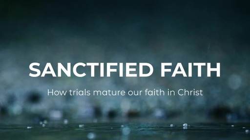

Sermons
Listen to inspiring messages and teachings from our pulpit.
Latest Message
Title of Latest Sermon: Living by Faith
This powerful message explores what it means to truly walk by faith in every aspect of our lives, even amidst challenges. Learn how to trust God's promises and step out in obedience.
Watch on YouTube Download AudioSermon Archive
Browse our collection of past sermons by date or series. Search functionality can be added here later with JavaScript.
The Power of Forgiveness
A message on the liberating power of forgiveness in our lives.
Listen/WatchThe Armor of God: Faith
Part 3 of our series on the Armor of God, focusing on the shield of faith.
Listen/Watch
